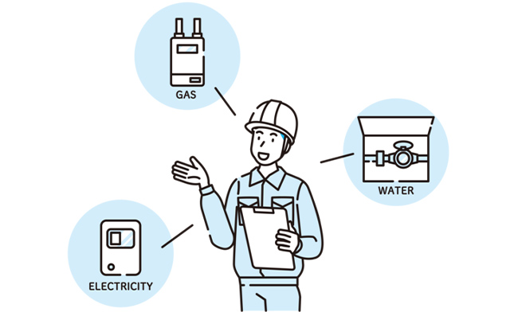

ワンストップ④：「接続コスト」という視点
「ワンストップ」という言葉を耳にする機会が増えています。
「窓口がひとつ」という意味ですが、
複数の人や会社を“接続するために発生する手間や時間”――
いわば「接続コスト」を減らすことに、大きな価値があります。
例えば、引っ越しをするときのことを考えてみましょう。
電気、ガス、水道、インターネット、住所変更……。
それぞれに連絡し、状況を説明し、日程を調整しなければなりません。
進み具合を自分で管理する必要があり、
どこかに変更が起きたら、全体に波及して再調整。
そこに不具合があっても、結果責任も自分が負います。

ウェブサイト制作でも、同じようなことが起こります。
成果を上げるには、企画、デザイン、システム等の密な連携が必要ですが、
それらを別々に依頼すると、個別に説明や確認が必要になります。
専門用語の違いによる認識ズレや、担当範囲のあいまいさが、
リアルな事故の原因にもなりがちです。
もちろん、能力的にそれぞれの専門家を直接まとめ上げることができる方もいます。
しかし、多くの場合、本来の業務を抱えながら調整役まで担うのは簡単ではありません。
ワンストップの価値は、単に作業を代行することではなく、
人と人、専門と専門をつなぐ“接続役”を引き受けることにもあります。
その結果として、見えにくい手間や時間、認識のズレをなくし、
成果につなげる。
私たちは、単にウェブサイトを制作するだけではなく、
専門家同士、そしてお客様と専門家との間をつなぐ役割も大切にしています。
言葉や立場の違いによって生まれる認識のズレを減らし、
目指した成果が実現するように調整していくこと。
これがワンストップの大切な価値だと考えています。